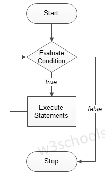

welcome in c++
while loop :
while loop is a most basic loop in C++. while loop has one control condition,
and executes as long the condition is true.
The condition of the loop is tested before the body of the loop is executed, hence it is called
an entry-controlled loop.
Syntax:
while (condition)
{
statement(s);
Incrementation;
}
Flowchart of while loop:

Example of a C++ Program to Demonstrate while loop:
#include <iostrem>
using namespace std;
int main() {
{
/* local variable Initialization */ int n = 1,times=5;
/* while loops execution */ while( n < = times )
{
cout << "C++ while loops: " << n <<endl;
n++;
}
return 0;
}
the output :

Do/While Loop :
The do/while loop is a variant of the while loop.
This loop will execute the code block once, before checking if the condition is true,
then it will repeat the loop as long as the condition is true.
Syntax
do {
// code block to be executed
}
while (condition);
Example :
int i = 0;
do {
cout << i << "\n";
i++;
}
while (i < 5);
the output :
0
1
2
3
4
For loop in C++ :
A loop is used for executing a block of statements repeatedly until a particular condition is satisfied.
For example, when you are displaying number from 1 to 100 you may want set the
value of a variable to 1 and display it 100 times, increasing its value by 1 on each loop iteration.
Syntax of for loop :
for (initialization; condition ; increment/decrement)
{
C++ statement
}
Flowchart

example:
#include <iostrem>
using namespace std;
int main() {
for(int i=1; i<=6; i++){
/* This statement would be executed
* repeatedly until the condition
* i<=6 returns false.
*/
cout <<"Value of variable i is: "<< i<<endl;
}
return 0;
}
the output :
Value of variable i is: 1
Value of variable i is: 2
Value of variable i is: 3
Value of variable i is: 4
Value of variable i is: 5
Value of variable i is: 6